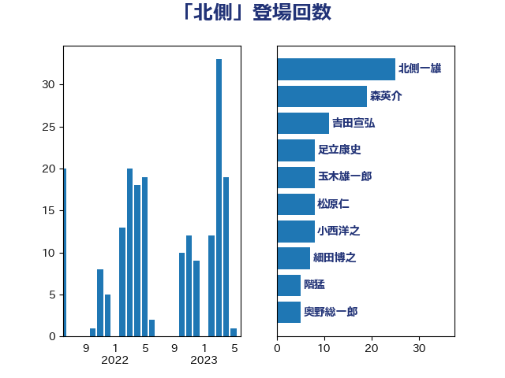

単語「北側」

| 北側一雄 | 公明党 | 25 回 |
| 森英介 | 自由民主党 | 19 回 |
| 吉田宣弘 | 公明党 | 11 回 |
| 足立康史 | 日本維新の会 | 8 回 |
| 玉木雄一郎 | 国民民主党 | 8 回 |
| 松原仁 | 立憲民主党 | 8 回 |
| 小西洋之 | 立憲民主党 | 8 回 |
| 細田博之 | 自由民主党 | 7 回 |
| 階猛 | 立憲民主党 | 5 回 |
| 奥野総一郎 | 立憲民主党 | 5 回 |
| 齋藤健 | 自由民主党 | 4 回 |
| 吉田はるみ | 立憲民主党 | 4 回 |
| 矢倉克夫 | 公明党 | 3 回 |
| 新藤義孝 | 自由民主党 | 3 回 |
| 小野泰輔 | 日本維新の会 | 3 回 |
| 古賀之士 | 立憲民主党 | 3 回 |
| 北神圭朗 | 無所属 | 3 回 |
| 上杉謙太郎 | 自由民主党 | 3 回 |
| 柴山昌彦 | 自由民主党 | 2 回 |
| 木村英子 | れいわ新選組 | 2 回 |
| 岩渕友 | 日本共産党 | 2 回 |
| 山添拓 | 日本共産党 | 2 回 |
| 宮本徹 | 日本共産党 | 2 回 |
| 國重徹 | 公明党 | 2 回 |
| 吉井章 | 自由民主党 | 2 回 |
| 前川清成 | 日本維新の会 | 2 回 |
| 井野俊郎 | 自由民主党 | 2 回 |
| 中野洋昌 | 公明党 | 2 回 |
| 三木圭恵 | 日本維新の会 | 2 回 |
| 青山大人 | 立憲民主党 | 1 回 |
| 野田佳彦 | 立憲民主党 | 1 回 |
| 野中厚 | 自由民主党 | 1 回 |
| 赤嶺政賢 | 日本共産党 | 1 回 |
| 笠井亮 | 日本共産党 | 1 回 |
| 福田昭夫 | 立憲民主党 | 1 回 |
| 石原正敬 | 自由民主党 | 1 回 |
| 石井正弘 | 自由民主党 | 1 回 |
| 田村智子 | 日本共産党 | 1 回 |
| 海江田万里 | 立憲民主党 | 1 回 |
| 浅川義治 | 日本維新の会 | 1 回 |
| 森田俊和 | 立憲民主党 | 1 回 |
| 森山浩行 | 立憲民主党 | 1 回 |
| 杉尾秀哉 | 立憲民主党 | 1 回 |
| 本庄知史 | 立憲民主党 | 1 回 |
| 新垣邦男 | 立憲民主党 | 1 回 |
| 斎藤アレックス | 国民民主党 | 1 回 |
| 岩谷良平 | 日本維新の会 | 1 回 |
| 山田賢司 | 自由民主党 | 1 回 |
| 山岸一生 | 立憲民主党 | 1 回 |
| 山口俊一 | 自由民主党 | 1 回 |
| 山下芳生 | 日本共産党 | 1 回 |
| 小島敏文 | 自由民主党 | 1 回 |
| 奥下剛光 | 日本維新の会 | 1 回 |
| 塩崎彰久 | 自由民主党 | 1 回 |
| 和田有一朗 | 日本維新の会 | 1 回 |
| 吉良よし子 | 日本共産党 | 1 回 |
| 前原誠司 | 国民民主党 | 1 回 |
| 中野英幸 | 自由民主党 | 1 回 |
| 下条みつ | 立憲民主党 | 1 回 |